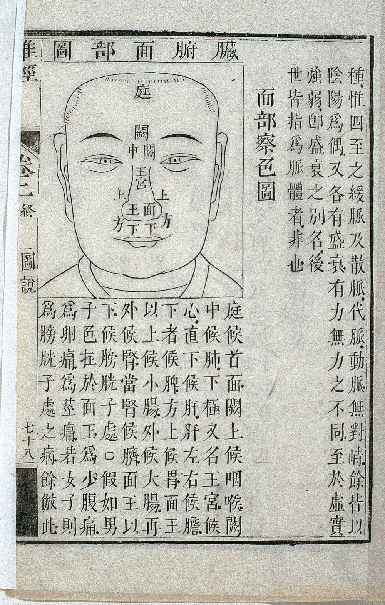
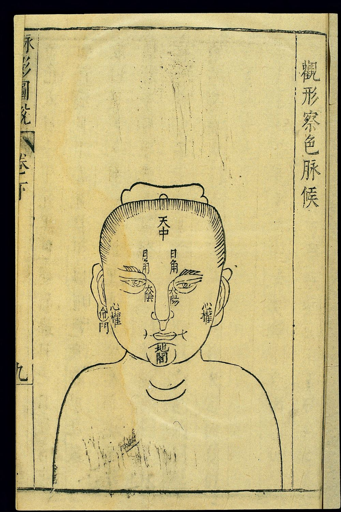
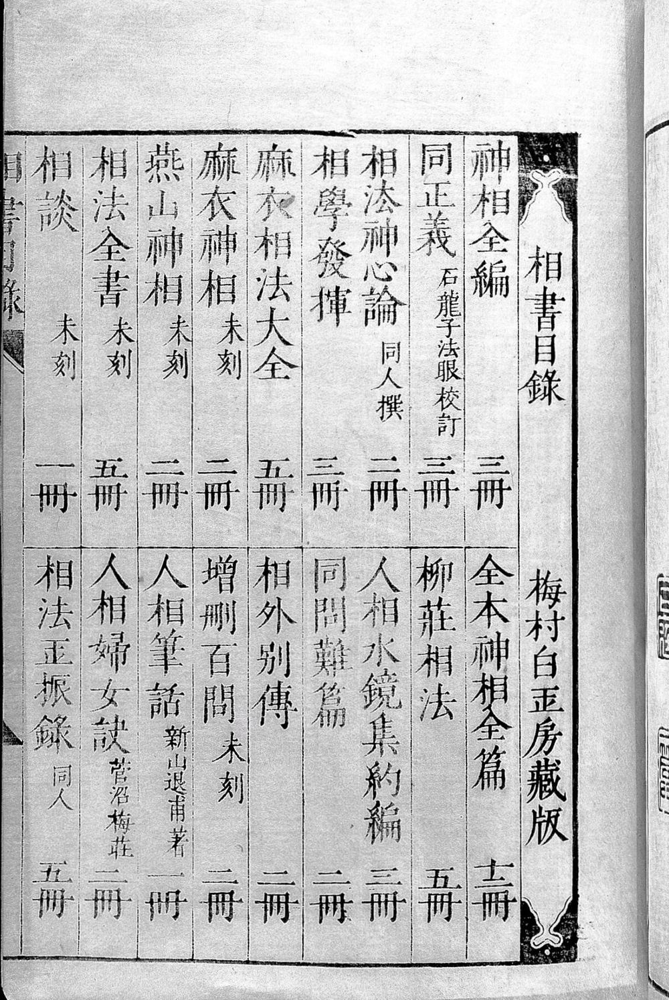
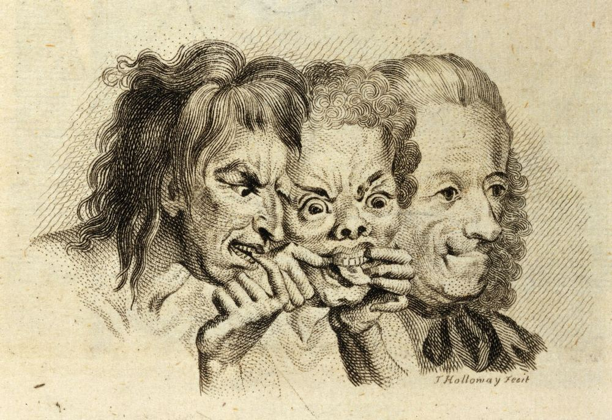
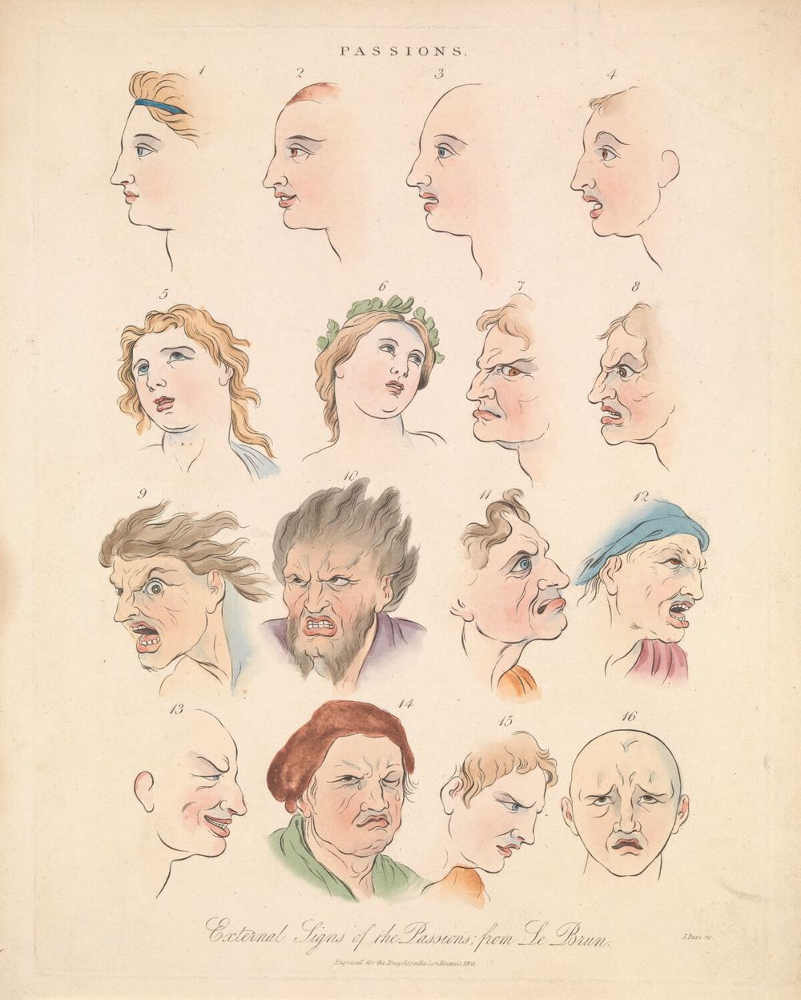
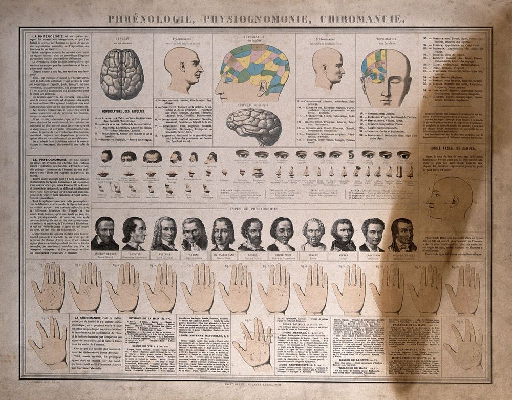
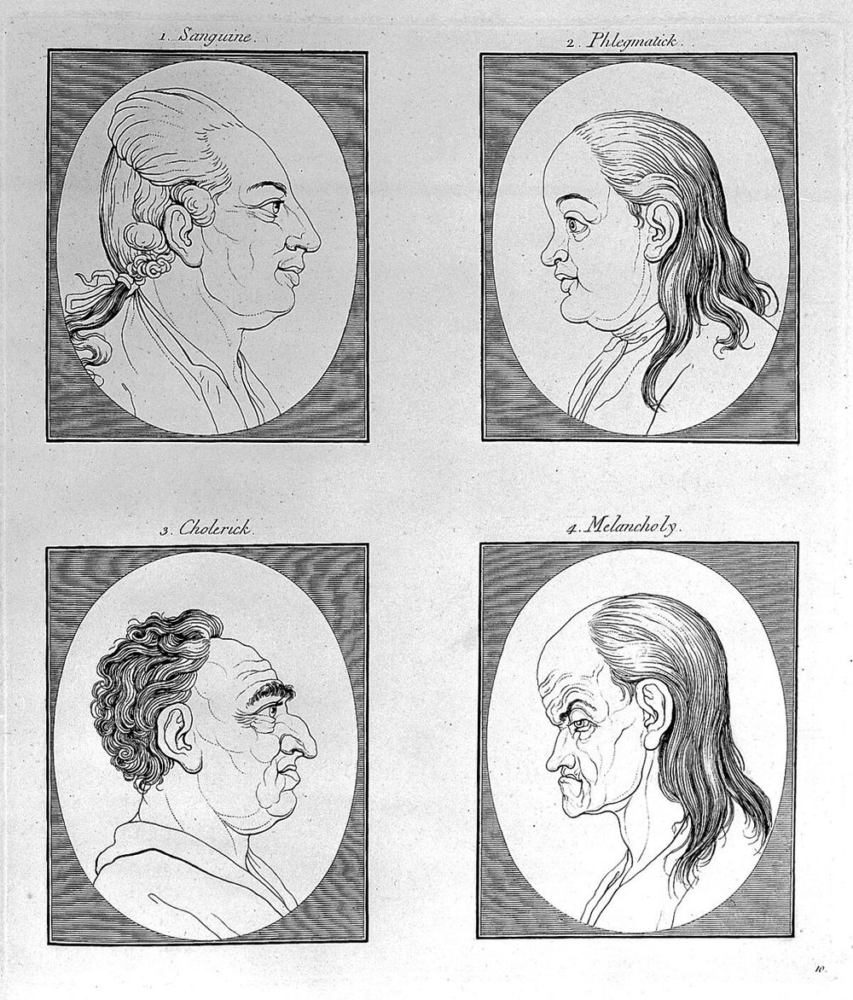
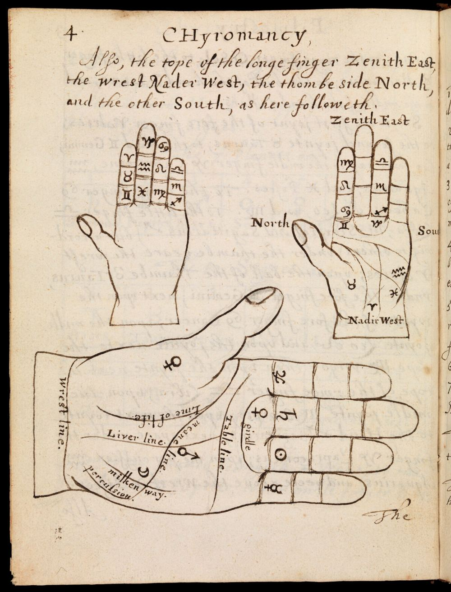
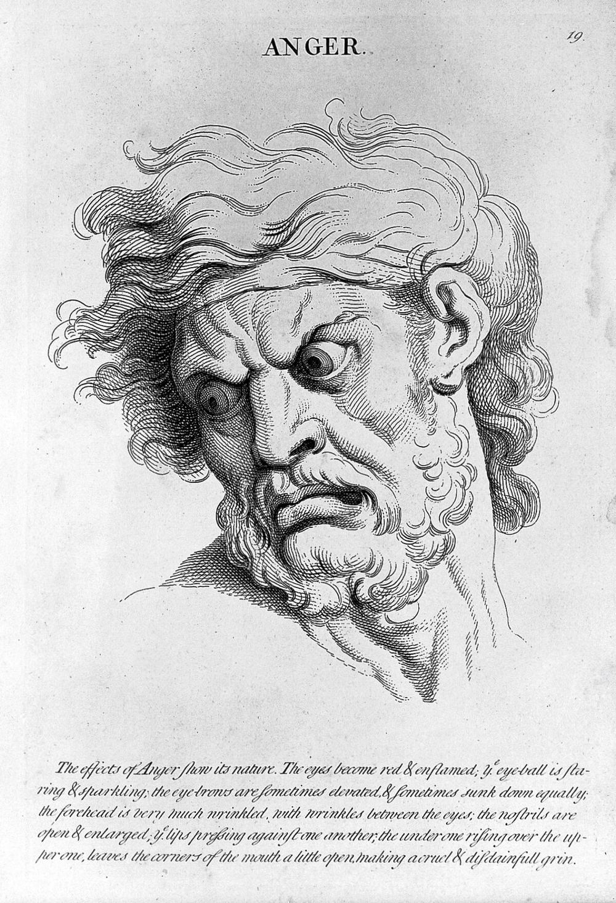

觀相識人自學講義 · 第一冊
五行形相
全套導讀：相術簡史、主要相書、科學檢驗與使用倫理
本冊共五冊之一｜自學用，依公開主題自行撰寫，非任何付費課程之內容
目錄
本冊導讀：這套講義怎麼讀
相術簡史：從〈非相〉到《冰鑑》，以及西方的對照
主要相書一覽
科學怎麼看「從臉看人」
使用倫理：觀相的界線
以形錄相（上）：《靈樞·陰陽二十五人》精讀
以形錄相（中）：後世相書的五行臉型
以形錄相（下）：手型五行
五行生剋與溝通：一個現代引申
練習
常見誤解
反思題
一頁總結
延伸閱讀與參考文獻
圖片來源
標記說明：本講義凡遇到相書的判斷，都分三層標示——
相書原說 傳統怎麼寫；
合理成分 有生理、心理學根據或合乎常識的部分；
無證據／有風險 沒有證據支持，或容易變成偏見的部分。
一、本冊導讀：這套講義怎麼讀
市面上有不少「觀相識人」「手面相應用」的課程與書籍。這套講義想做的是另一件事：把傳統相法到底在講什麼、依據哪些書、用什麼邏輯看人，系統地整理清楚 ；同時老老實實地告訴你，哪些說法有一點道理、哪些完全沒有證據、哪些用了會傷人。讀完之後，你應該能讀懂相書、聽懂別人在說什麼，也能把其中真正有用的部分——觀察氣色與姿態、留意自己的第一印象、調整溝通方式——用在日常生活裡。
全套共五冊，每冊可以單獨讀，但建議依序：
冊 主題 內容 一（本冊） 五行形相 全套導讀、相術簡史、主要相書、科學檢驗、使用倫理；《靈樞·陰陽二十五人》的五形人；五行臉型與手型；五行生剋在溝通上的引申 二 面相結構 三停、五嶽四瀆、十二宮、五官、氣色神采；與《素問》《靈樞》望診對照 三 手相結構 手型、三大主線與輔線、掌丘（八卦掌位與西式行星丘）、常見紋符、指節與指甲 四 實務應用 職場合夥、感情擇偶、財運健康：逐條並列「相書原說 → 可驗證的觀察替代 → 風險提醒」 五 修心養相 相隨心轉：心念、作息、儀態、利他；連結《冰鑑》《傳習錄》《莊子》《素問》；21 天練習
每一章的讀法
凡是引用古書，講義都照同一個順序處理：原文 → 字詞註 → 白話 → 解說 。原文一律逐字抄自中文維基文庫的版本，框起來並標書名篇名；找不到原文的「相書口訣」，就不會寫成引文，而是寫「傳統相書常見的說法是……（未能核對原典）」。這樣做有點囉嗦，但很重要：相術這一行，「古書上說」常常是後人編的。
本套講義的「三層判讀」：每一條相書說法都要過這三關
① 相書原說
原典怎麼寫？
逐字引原文、標篇名；
找不到原文就註明
「通說，未能核對」
② 合理成分
哪一部分有道理？
氣色反映睡眠與健康；
表情、姿態反映當下情緒；
體型與季節耐受有關聯
③ 無證據／有風險
哪一部分不能當真？
從長相斷人品、命運、
誠信，沒有證據支持；
還會放大偏見與歧視
圖 1 三層判讀。這是整套講義的骨架：先忠實記下傳統說法，再挑出有根據的部分，最後把沒有證據、容易傷人的部分明白標出來。（自繪）
本冊的位置
本冊是全套的地基。前半部（第二到五章）回答三個問題：相術從哪裡來？主要的書有哪些？現代科學怎麼看？ 後半部（第六到九章）進入相法裡最古老、也最有系統的一種分類——以形錄相 ，也就是依身形、臉型、手型把人分成木火土金水五類。這套分類的源頭不在相書，而在醫書《靈樞》；後來的相書再把它簡化成「木長、火尖、土厚、金方、水圓」。我們會讀原文，看看兩者差在哪裡，最後談談五行生剋能不能借來當作溝通上的提醒。
先講清楚
相術用來預測性格、命運、誠信，沒有科學證據支持 。這套講義把它當作一門值得理解的傳統文化與觀察語言來讀，而不是一套可靠的「讀人工具」。真正要了解一個人，請看他的行為、紀錄，以及他怎麼對待那些對他沒有利害關係的人。
二、相術簡史：從〈非相〉到《冰鑑》
相術與「從臉看人」的歷史時間軸（年代為約數；西元 1000 年後刻度放大）
前400
0
500
1000
1200
1400
1600
1800
2000
中國
西方
荀子〈非相〉
批評相人
《黃帝內經》
望診、二十五人
王充《論衡·骨相》
《月波洞中記》
約唐宋間
張行簡《人倫大統賦》
金
薛延年注序
元
《柳莊相法》
明，相傳袁珙
《神相全編》
明，託名陳摶
《冰鑑》流傳
清，作者有爭議
偽亞里斯多德
《觀相學》
Della Porta
人獸比較
Le Brun
表情講座
Lavater
《觀相學斷片》
Gall 顱相學
Lombroso
犯罪人類學
Todorov 等
臉部印象研究
圖 2 相術歷史時間軸。上排是中國的相書與醫書，下排是西方的觀相學（physiognomy）與現代研究。年代多為約數；許多相書託名古人，實際成書年代不明。（自繪）
1. 先秦：相人術已經流行，也已經有人反對
從人的長相推斷吉凶貴賤，在春秋戰國時已經是一門行當。史書與諸子書中記了幾位有名的相人者，例如姑布子卿、唐舉。有意思的是，最早系統談論相術的文章，是一篇批評它的文章 ：《荀子》的〈非相〉。
（本講義所據的資料庫沒有收錄《荀子》，以下為筆者的轉述，未引原文。）
荀子的論點大致是：古時候沒有這種東西，有學問的人也不談它；看一個人的外形，不如看他的心志；看心志，又不如看他選擇走的路、學的方法。外形長得如何，並不妨礙一個人成為君子；心術不正，長得再好也是小人。他舉了許多古代聖賢長相奇特、甚至在當時看來「醜陋」的傳說，說明外貌與德行對不上。兩千多年前的這段批評，和今天心理學的結論方向相當一致，值得記住。
2. 漢代：相人書成為一類，醫家發展出望診
到了漢代，相人之書已多到足以被分類：《漢書·藝文志》把相人、相宅、相六畜一類的書歸在「形法」之下。漢初的許負以相人出名，《史記》裡記了她替周亞夫看相的故事；東漢的王充在《論衡》裡專寫了〈骨相〉一篇，主張命運表現在骨相上——同一時代就有支持與反對兩種聲音。
同一時期，另一條更務實的「看臉」傳統在醫家裡成形：望診 。《黃帝內經》（分《素問》《靈樞》兩部）把臉上不同部位對應到臟腑，從顏色與光澤推斷病在哪裡、輕重如何。醫家的立場是：身體裡面的變化，會在外面留下痕跡 。
歧伯答曰︰視其外應，以知其內藏，則知所病矣。《靈樞·本藏第四十七》
歧伯曰︰五官者，五藏之閱也。……鼻者，肺之官也。目者，肝之官也。口脣者，脾之官也。舌者，心之官也。耳者，腎之官也。《靈樞·五閱五使第三十七》
外應 表現在外面的徵象。
內藏 內在的臟腑（藏，古同「臟」）。
閱 檢閱、察看之處；五官是察看五臟的窗口。
看身體表面的反應，可以推知內在臟腑的狀態，也就知道病在哪裡。五官是觀察五臟的地方：鼻屬肺、目屬肝、口唇屬脾、舌屬心、耳屬腎。
請注意醫家與相家的差別。醫家看臉，是為了找病、治病 ，看的主要是會變化的東西：顏色、光澤、腫脹、呼吸；相家看臉，卻常常要從不會變的骨骼與輪廓 推斷一生的貴賤壽夭。前者有一部分可以檢驗（例如嘴唇發紫、眼白發黃確實值得就醫），後者則很難。本套第二冊會更仔細地比較兩者。

圖 3 〈臟腑面部圖〉與〈面部察色圖〉，中國木刻，1817 年。臉上標著「庭、闕、王宮、面王、方上」等部位，下方說明文字「庭候首面，闕上候咽喉，闕中候肺……」正是由《靈樞·五色》「庭者，首面也。闕上者，咽喉也。闕中者，肺也」一段改寫而來：這是醫家望診的臉，不是相家論命的臉。來源：Wellcome Collection，Public Domain Mark。

圖 4 〈觀形察色脈候〉，明末木刻。臉上同時標了「天中、日角、月角、地閣、命門」等名稱，其中天中、日角、地閣也是相書常用的部位名。醫書與相書共用一套「臉部地圖」，正好說明兩條傳統彼此借用。來源：Wellcome Collection，CC BY 4.0。
3. 唐宋金元：相書成形
現存比較完整、能讀到原文的相書，多半出自唐宋以後。本講義手上有兩部：
《月波洞中記》 ：序文自稱相術九篇是「老君」題在太白山月波洞的石壁上，由鍾離權、呂洞賓一系傳下，序末署「赤烏二十年」。赤烏是三國吳的年號，實際只用了十來年，並沒有「二十年」——這種託古的說法本身就提醒我們：相書的來歷常常不可考。一般認為它大約成書於唐宋之間。書中論骨法、神氣、五嶽四瀆、眼睛的「五等」等，後文會引到。《人倫大統賦》 ：金代張行簡所作，元代薛延年作注（序署皇慶二年，即 1313 年）。全篇以賦體寫成，從額、眉、目、耳、鼻、口、齒一路講到手足、聲音與氣色，篇幅短而系統，薛延年說它「芟諸家之冗繁，撮百世之機要」。
夫閱人之道，氣色難辨，骨法易明。《人倫大統賦·原序》（薛延年）
看人的方法裡，氣色最難辨認，骨骼的格局比較容易看明白。
這句話把相術的兩大支柱說得很清楚：骨法 （不變的骨架輪廓）與氣色 （會變的顏色光澤）。本冊講的「五行形相」屬於骨法這一支。
4. 明清：大部頭彙編與文人相法
明代出現了大規模的彙編，最有名的是《神相全編》（舊題宋陳摶撰、明袁忠徹訂），把各家口訣、圖像收在一起，坊間流傳的「麻衣相法」「柳莊相法」等內容也多半在這類書裡輾轉相傳。這些書在本講義使用的公有領域資料庫裡沒有收錄，所以我們不引用它們的文字 ，只介紹書名與地位。
清代的《冰鑑》則是另一種風格：篇幅短，分〈神骨〉〈剛柔〉〈容貌〉〈情態〉〈鬚眉〉〈聲音〉〈氣色〉七章，強調「神」與「情態」，自稱「文人」的相法，看不起「他家兼論形骸」。維基文庫本署名「羅祖真人」，坊間則普遍說是曾國藩所作；作者歸屬其實有爭議，沒有可靠證據支持曾國藩之說，讀者引用時最好寫「傳為」。
一身精神，具乎兩目；一身骨相，具乎面部。他家兼論形骸，文人先觀神骨，開門見山，此為第一。《冰鑑·神骨章第一》
一個人的精神集中在兩眼，一個人的骨相集中在臉上。別家相法連身體四肢一起論，我們讀書人先看神與骨，開門見山，這是第一要務。

圖 5 Wellcome 所藏日本書籍（MS Japanese 12）中的一頁〈相書目錄〉。可以讀出《神相全編》三冊、《麻衣相法大全》五冊、《麻衣神相》、《燕山神相》、《相法全書》等書名，部分注「未刻」，另有日本相家石龍子校訂的書。可見明清相書在江戶時代的日本也大量翻刻流通，本冊下一章的書目表可以和這頁互相對照。原圖掃描方向上下顛倒，本講義已轉正。來源：Wellcome Collection，CC BY 4.0。
5. 西方的對照：從觀相學到表情研究
「從臉看人」不是中國獨有。古希臘有一部託名亞里斯多德的《觀相學》（Physiognomonica），把人的臉和動物比較（像獅子的人勇猛、像狐狸的人狡猾）；文藝復興時期的 Della Porta 把這種人獸比較畫成了大量插圖。十七世紀法國畫家 Le Brun 在學院講座裡系統地描繪各種情緒的表情，他關心的是表情 ，是會變的；十八世紀瑞士牧師 Lavater 的《觀相學斷片》風靡歐洲，主張從固定的輪廓 （側臉、額頭、鼻樑）可以讀出品格。十九世紀又有 Gall 的顱相學（從頭骨凸起判斷心智能力）與 Lombroso 的「天生犯罪人」理論——後者把某些臉部特徵當作犯罪的標記，對司法與種族歧視造成了真實傷害，今天已被完全否定。
中西對照下，有一條線非常清楚：看「會變的東西」（表情、氣色、姿態）比較接近可以檢驗的觀察；看「不變的東西」（骨架、輪廓、五官形狀）去推斷品格與命運，中外都沒有成功過。

圖 6 Lavater《觀相學論集》英譯本（1789–1798）的插圖，T. Holloway 刻。三個人以手指扯開嘴巴、瞪眼皺眉，做出誇張的鬼臉。Lavater 自己也承認，表情會讓同一張臉看起來完全不同——這恰好是他「從輪廓讀品格」理論最大的弱點。來源：Wellcome Collection，Public Domain Mark。

圖 7 〈情緒的外在徵象〉（External Signs of the Passions; from Le Brun），J. Pass 依 Le Brun 原作刻製的彩色版畫，1821 年。十六個頭像依編號呈現平靜、驚奇、渴望、恐懼、憤怒、輕蔑、悲傷等表情：眉的高低、眼的開合、嘴角的方向一改，同一類臉就讀出完全不同的「性格」。Le Brun 研究的是會變的表情，與相書看不變的骨相，正好是兩條路。來源：Wellcome Collection，Public Domain Mark。
三、主要相書一覽
下表列出常被提到的相書與相關醫書。「本講義有原文」一欄指本套講義所據的資料夾 books/ 裡有沒有收錄（皆取自中文維基文庫，公有領域）。沒有原文的書，本套講義一律不寫成引文。
書名 時代／題名作者 特色 本講義有原文 《黃帝內經·靈樞》 約戰國至漢，託名黃帝與岐伯等問答 〈陰陽二十五人〉五形人、〈五色〉面部分區、〈五閱五使〉五官、〈本藏〉、〈通天〉五態人 有 《黃帝內經·素問》 同上 望診與五行理論：〈陰陽應象大論〉〈脈要精微論〉〈五藏生成篇〉〈寶命全形論〉等 有 《月波洞中記》 不著撰人，序託老君、鍾呂，約唐宋間 骨法、九骨、神氣、五嶽四瀆、眼分五等（配五行）；強調「凡欲相之，必先試之」 有 《人倫大統賦》 金·張行簡撰，元·薛延年注 賦體，由額、眉、目、耳、鼻、口、齒到手足、聲音、氣色，簡明系統 有 《冰鑑》 清；維基文庫署「羅祖真人」，坊傳曾國藩 神骨、剛柔、容貌、情態、鬚眉、聲音、氣色七章；重神與情態 有（兩個版本） 《太清神鑑》 舊題五代後周王朴 收入四庫的早期綜合相書 無 《玉管照神局》 舊題南唐宋齊丘 收入四庫的早期相書 無 《麻衣相法》 託名宋代麻衣道者 坊間最通行的相書名號之一，版本雜亂 無 《神相全編》 舊題宋陳摶撰、明袁忠徹訂 大型彙編，收各家口訣與圖像，後世通說多出於此類書 無 《柳莊相法》 相傳明代袁珙（號柳莊） 明代名相士之說，流傳甚廣 無 《論衡·骨相》 東漢王充 哲學家為骨相說辯護的文章 無 《荀子·非相》 戰國荀況 最早系統批評相術的文章 無
讀相書的三個小提醒
託名很常見。 「麻衣」「陳摶」「鬼谷子」「老君」掛在書上，不等於真是他們寫的。版本很雜。 同一句口訣，不同刻本字句差很多；坊間書籍與網路上的「相書原文」常是近人改寫。通說不等於原典。 你常聽到的「某某相主某某」，很多在早期相書裡找不到，是後來一層層加上去的。 四、科學怎麼看「從臉看人」
過去二十年，心理學對「人如何從臉形成印象」做了大量研究，其中普林斯頓大學 Alexander Todorov 的團隊最有代表性。研究的結論可以濃縮成一句話：人對陌生人的臉，第一印象形成得極快、彼此相當一致，但拿來預測那個人真實的性格與行為，準確度很低。 下面分幾點說明，出處都附在書末參考文獻。
1. 印象來得很快
Willis 與 Todorov（2006，Psychological Science ）讓受試者看陌生人的臉，只給極短的時間（論文標題就寫明是 100 毫秒），再請他們評斷可信、能幹、討喜等特質。結果發現，極短時間下的判斷和時間不限時的判斷已經很接近；給更多時間，人主要是對自己的判斷更有信心，而不是改變判斷。換句話說，「一眼看出這人如何」的感覺，大多在我們意識到之前就已經形成了。
2. 印象很一致，而且有固定的「維度」
Oosterhof 與 Todorov（2008，PNAS ）分析人們對臉的各種評價，發現大部分判斷可以歸納到兩個主要維度：一個接近「可不可信、友不友善」，一個接近「強不強勢」。前者與臉看起來像不像在微笑、生氣有關，後者與臉看起來成熟、陽剛的程度有關。也就是說，我們常把一張「平靜的臉」上些微像情緒的線索，過度推論成穩定的性格。 相書說某種眉眼「凶」、某種嘴角「和」，有一部分其實是在描述這種情緒相似性。
3. 印象有影響力：它會改變結果
這些印象雖然不準，卻真的會影響人的命運。Todorov 等人（2005，Science ）讓受試者只看美國國會候選人的照片、評斷誰比較「能幹」，結果這種憑臉的判斷能以高於隨機的比例預測真實的選舉勝負——不是因為長得能幹的人真的比較能幹，而是因為選民也受同樣的印象影響。Wilson 與 Rule（2015，Psychological Science ）分析美國佛羅里達州的判決資料，發現在謀殺罪定讞的案件中，長相被評為「較不可信」的被告，較可能被判死刑而非終身監禁。「看臉識人」的危險，不只是不準，而是不準的判斷會變成真實的差別待遇。
4. 準確度：比不看還差的時候
那麼，從臉判斷性格到底準不準？Olivola 與 Todorov（2010，Journal of Experimental Social Psychology ）用大量真實人物的照片與他們自述的特質、行為做檢驗，發現受試者看了照片後的猜測，往往還不如只依「大多數人是怎樣」的基本比率去猜 ；外表資訊反而把人帶偏了。Todorov 等人（2015，Annual Review of Psychology ）的回顧也指出：臉部印象的一致性很高，但與實際性格、行為之間即使有關聯也很微弱，而且常常混雜了照片角度、表情、打扮等因素。研究者 Rule 等人（2013，Journal of Personality and Social Psychology ）也報告了類似的「高一致、低準確」現象。
臉部第一印象：高度一致，卻不一定準確（概念示意，非實際數據）
理想的判斷
大家意見一致，而且命中真實
看臉的判斷
大家意見很一致，但整群偏離真實
隨便猜
意見分散，也不準
靶心＝那個人真實的行為傾向；藍點＝不同評分者的判斷。
圖 8 「一致」不等於「準確」。如果大家看同一張臉都覺得「這人不可靠」，那只說明大家的偏見一樣，不說明這人真的不可靠。（自繪概念圖，不代表任何研究的實際數據）
5. 新瓶裝舊酒：AI 觀相
近年有研究者宣稱用深度學習從臉部照片辨識「犯罪傾向」（Wu 與 Zhang，2016，arXiv 預印本），引起強烈批評。Agüera y Arcas、Mitchell 與 Todorov（2017）的長文〈Physiognomy's New Clothes〉指出：這類系統學到的往往是照片來源、表情、打扮的差異，以及資料本身蘊含的社會偏見，再用「客觀的機器」把偏見包裝起來。這和十九世紀 Lombroso 的錯誤如出一轍。

圖 9 〈顱相學、觀相學、手相學〉（Phrénologie, Physiognomonie, Chiromancie），法國彩色石印百科圖，1866 年。上排是 Gall 顱相學把腦分成各種「官能」的頭像；中排是鼻、眼、口、耳的形狀分類與一排名人肖像（含 Lavater、Voltaire）；下排是二十多隻標了掌紋的手。十九世紀的人把這三門學問並列為「科學」，今天三者都被歸入沒有實證支持的偽科學。來源：Wellcome Collection，Public Domain Mark。
6. 那麼，相術裡有沒有「合理成分」？
合理成分 氣色與健康、睡眠有關。 臉色蒼白、眼周發黑、嘴唇發紫、眼白發黃，都可能是身體狀況的訊號（但請交給醫生判斷，不要自己下結論）。合理成分 表情與姿態反映當下情緒。 這是 Le Brun 以來、到現代情緒研究一路累積的觀察；但「當下的狀態」不能等於「一輩子的性格」。合理成分 長期的生活方式會留下痕跡。 常皺眉的人眉間紋較深，常曬太陽的人膚色較深、皺紋較多。這是生活史，不是命運。無證據／有風險 從骨架、輪廓、五官形狀推斷品格、誠信、壽命、貴賤 ：沒有可靠證據支持，而且會加強對特定外貌、族群、身障者的偏見。
五、使用倫理：觀相的界線
學相術最大的風險，不是學錯，而是學會了就忍不住拿去給人貼標籤 。有趣的是，好的相書自己也知道這一點。《月波洞中記》在講眼睛之前，先說了這樣一段話：
夫欲相之，必先試之性行，相外乃得其真。欲知其性行者，察之於眼，驗之於口，則可見矣。《月波洞中記·卷上·心隱》
試之性行 用事情去檢驗一個人的品性與作為。
相外 相面之外；也可解作「在外表之外」。
驗之於口 從他的言談來驗證。
想要看一個人，一定要先用事情檢驗他的品性與行為，在相貌之外才能得到真相。要了解他的品性，可以看他的眼神、聽他怎麼說話。
同一段的結尾又說：「經雲：重瞳者未必為貴，眇目者未必為賤。仔細觀察相可知矣。」——有異相的人未必尊貴，一眼失明的人也未必卑賤。相書的作者心裡也明白，長相和一個人的價值不能畫上等號。
若賦性粗惡禍必及，如修德惕厲祿永終。《人倫大統賦·卷上》
如果天性粗暴凶惡，災禍必定上身；如果修養德行、時時警惕自勵，福祿就能長久。
本套講義的五條使用原則
不對人下斷語。 不說「你這是剋夫相」「他一看就是小人」。相書的斷語只當作文化材料來理解。外貌、疾病、障礙、族群特徵不是品德。 天生的長相、疤痕、殘疾、膚色、臉型，都不能被說成性格缺陷。健康線索只導向就醫。 看到氣色、指甲、掌色有異，最多說「可能值得留意，去給醫生看看」，不做診斷。用行為驗證印象。 第一印象只當作「待驗證的假設」，再用他做了什麼、過去紀錄如何、怎麼對待服務生或下屬來檢驗。先用在自己身上。 觀相最有價值的用途，是看見自己的第一印象有多快、多主觀，以及自己的表情、姿態、作息如何影響別人怎麼看你。
特別提醒：職場與擇偶
在招募、升遷、相親、租屋等場合用長相判斷人，不只不準，還可能構成歧視，甚至觸法。本套第四冊會逐條示範：相書怎麼說 → 可以改看什麼行為與紀錄 → 風險在哪裡。
六、以形錄相（上）：《靈樞·陰陽二十五人》精讀
「以形錄相」就是依身形把人分類。中國最早、也最有系統的這種分類，不在相書而在醫書：《靈樞》第六十四篇〈陰陽二十五人〉。它把人先分成木、火、土、金、水五種「形」，每一形再依五音細分成五類，總共二十五種人。目的很清楚：醫生下針用藥之前，要先知道這個人的體質 。
1. 開場：五行與人
天地之間，六合之內，不離乎五，人亦應之。……願聞二十五人之形，血氣之所生別，而以候從外知內，何如。《靈樞·陰陽二十五人第六十四》
歧伯曰︰先立五形金木水火土，別其五色，異其五形之人，而二十五人具矣。同上
六合 上下與東西南北四方，指整個天地空間。
不離乎五 萬物都離不開五行的分類。
血氣之所生別 因血氣不同而產生的差別。
候從外知內 觀察外表來推知內在。「候」是觀察、診察。
天地四方之內的事物，都可以用「五」來歸類，人也是一樣。想聽聽二十五種人的形態，以及血氣不同造成的差別，好從外表推知內在。——岐伯說：先立下金木水火土五種形，再分辨五種膚色，區分五形之人，二十五種人就齊備了。
注意「以候從外知內」這幾個字：這和前面〈本藏〉的「視其外應，以知其內藏」是同一個思路。《靈樞》的五形人，本意是醫學上的體質分類 ，所以每一形最後都要講「能春夏，不能秋冬」之類的季節耐受，以及容易在哪條經脈發病。
《靈樞·陰陽二十五人》五形人的身形描述（依原文示意）
木形之人
蒼色・小頭・長面
大肩背・直身・小手
火形之人
赤色・小頭・脫面
肩背髀腹好・小手足
土形之人
黃色・圓面・大頭
美肩背・大腹・多肉
金形之人
白色・方面・小頭
小肩背・小腹・骨輕
水形之人
黑色・面不平・大頭
小肩・大腹・下尻長背
圖 10 依〈陰陽二十五人〉原文描述畫出的五形人示意圖：木形小頭長面、大肩背直身；火形小頭脫面、肩背髀腹豐滿；土形大頭圓面、大腹多肉；金形方面小頭、肩背腹都小；水形大頭面不平、小肩大腹、背長。原文只有文字，圖中比例是筆者的轉譯。（自繪）
2. 木形之人
木形之人，比於上角，似於蒼帝，其為人，蒼色，小頭，長面，大肩背，直身，小手，足好，有才，勞心，少力，多憂，勞於事。能春夏，不能秋冬，感而病生，足厥陰佗佗然。《靈樞·陰陽二十五人第六十四》
上角 角、徵、宮、商、羽為五音，分配木、火、土、金、水。「上角」是木音之正，代表木形的典型。
蒼帝 五方天帝中的東方之帝，色青。
蒼色 膚色偏青。
足好 腳形端好。
勞心 用心多、思慮多。
能春夏，不能秋冬 耐得住春夏，耐不住秋冬；「能」讀作「耐」。
足厥陰 足厥陰肝經；指這型人受病多在此經。
佗佗然 舉止從容、有條理的樣子（注家說法不一）。
木形的人，對應五音中的上角，像東方的蒼帝。他們膚色偏青，頭小、臉長，肩背寬大，身體挺直，手小、腳形好。有才能，用心多，力氣較小，容易憂慮，為事情操勞。能耐春夏，不耐秋冬，秋冬受了邪氣容易生病，病多在足厥陰經；舉止從容有度。
解說： 這裡第一次出現了後世「木形長面」的源頭：「小頭，長面」。但原文同時說木形人「大肩背」，並不是坊間常說的「全身瘦長」。性情方面「有才，勞心，少力，多憂」是一組相當具體的描述：腦力型、愛操心、體力不算強。
3. 火形之人
火形之人，比於上徵，似於赤帝。其為人，赤色，廣蛎，脫面，小頭，好肩背髀腹，小手足，行安地，疾心，行搖，肩背肉滿，有氣，輕財，少信，多慮，見事明，好顏，急心，不壽暴死。能春夏，不能秋冬，秋冬感而病生手少陰，核核然。同上
上徵 徵（音「止」）為火音。
廣蛎 本檔作「廣蛎」，通行本多作「廣䏢」或相近字形，一般解為背脊肌肉寬厚；此字歷來有異文，存疑。
脫面 臉形瘦削、下巴尖（注家多如此解）。
好肩背髀腹 肩、背、大腿、腹部生得好，豐滿勻稱。
行安地 走路腳步踏實。
疾心／急心 性子急。
行搖 走路時身體搖動。
有氣 有氣魄、有衝勁。
好顏 愛面子、重儀容。
手少陰 手少陰心經。
核核然 真實不虛、或急切的樣子（注家說法不一）。
火形的人，對應上徵，像南方的赤帝。膚色偏紅，背脊肌肉寬，臉瘦削、下巴尖，頭小，肩背腿腹都生得好，手腳小，走路踏實但身體搖動，性子急。肩背肌肉飽滿，有氣魄，不看重錢財，不太守信，思慮多，看事情透徹，愛面子，心急，容易短壽或突然死亡。能耐春夏，不耐秋冬，秋冬受邪容易在手少陰經發病。
解說： 後世說「火形尖」，源頭在這裡的「脫面，小頭」。但請注意原文裡兩個非常重的斷語：「少信」與「不壽暴死」。以醫學角度看，「急心、多慮、不壽暴死」或許是古人對某類體質（例如容易激動、心血管負擔大）的經驗歸納；但把「少信」——不太守信——直接綁在一種體型上，就是本講義要標出來的無證據／有風險 ：讀到這裡，只能說「古人這樣寫」，不能拿來看任何一個真實的人。
4. 土形之人
土形之人，比於上宮，似於上古黃帝。其為人，黃色，圓面，大頭，美肩背，大腹，美股脛，小手足，多肉，上下相稱，行安地，舉足浮安，心好利人，不喜權勢，善附人也。能秋冬，不能春夏，春夏感而病生，足太陰敦敦然。同上
上宮 宮為土音，五音之主。
美股脛 大腿、小腿生得好。
上下相稱 上半身與下半身比例協調。
舉足浮安 抬腳輕而穩。
心好利人 心裡喜歡給人好處、幫助別人。
善附人 容易與人親近、依附眾人。
足太陰 足太陰脾經。
敦敦然 敦厚誠實的樣子。
土形的人，對應上宮，像上古的黃帝。膚色偏黃，臉圓，頭大，肩背好看，腹大，腿形好，手腳小，肉多，上下身比例相稱，走路踏實，抬腳輕穩。心裡喜歡幫助別人，不喜歡權勢，容易與人親近。能耐秋冬，不耐春夏，春夏受邪容易在足太陰經發病；為人敦厚。
解說： 請特別記住「圓面」 這兩個字。《靈樞》把圓臉給了土形；可是後世相書的通說卻是「水圓、土厚」。同一套五行，臉型的分配在不同時代並不一致——這本身就說明，五行臉型是一套人為約定的分類 ，不是從大量觀察裡歸納出來的規律。
5. 金形之人
金形之人，比於上商，似於白帝。其為人，方面，白色，小頭，小肩背，小腹，小手足，如骨發踵外，骨輕，身清廉，急心靜悍，善為吏，能秋冬，不能春夏，春夏感而病生，手太陰敦敦然。同上
上商 商為金音。
白帝 西方之帝，色白。
如骨發踵外 腳跟外側好像有骨頭突出（一說足跟堅實）。
骨輕 骨架輕巧。
身清廉 身形清瘦俐落；也有注家解作為人清白廉潔。
急心靜悍 性子急，平時沉靜，行動時果決強悍。
善為吏 擅長做官吏、處理公務。
手太陰 手太陰肺經。
金形的人，對應上商，像西方的白帝。臉方，膚色偏白，頭小，肩背小，腹小，手腳小，腳跟外側骨突，骨架輕，身形清瘦俐落；性子急，平時沉靜、動起來果決，擅長處理公務。能耐秋冬，不耐春夏，春夏受邪容易在手太陰經發病。
解說： 「方面」就是後世「金方」的源頭，這一點古今一致。原文的金形人整體是「小」——小頭、小肩背、小腹、小手足、骨輕——是個精幹俐落的形象，和坊間把金形說成「骨架粗大、方頭方腦」的印象不太一樣。
6. 水形之人
水形之人，比上羽，似於黑帝。其為人，黑色面不平，大頭廉頤，小肩，大腹，動手足，發行搖身，下尻長背，延延然，不敬畏，善欺紿人戮死，能秋冬，不能春夏，春夏感而病，生足少陰，汗汗然。同上
上羽 羽為水音。
黑帝 北方之帝，色黑。
面不平 臉部不平整、起伏較多。
廉頤 下巴瘦削、有稜角（廉，稜角）。
動手足 手腳好動。
發行搖身 走路時搖晃身體。
下尻長背 臀部到背部顯得長。
延延然 身形修長舒展的樣子。
善欺紿人戮死 紿（音「待」），欺騙；原文說這型人善於欺騙，會因而被殺。
足少陰 足少陰腎經。
水形的人，對應上羽，像北方的黑帝。膚色偏黑，臉面不平，頭大、下巴瘦削，肩小、腹大，手腳好動，走路搖身，臀背修長。不知敬畏，善於欺騙別人，可能因此被殺。能耐秋冬，不耐春夏，春夏受邪容易在足少陰經發病。
解說： 原典的水形是「面不平」「廉頤」，根本不是圓臉；後世「水圓」的說法與此不合。更值得警惕的是「不敬畏，善欺紿人戮死」——把「膚色黑、臉不平」和「愛騙人、不得好死」連在一起。今天讀到這一句，我們要非常清楚地說：這是古代文獻中把膚色、長相與品德掛鉤的例子，是本套講義最反對的那一類推論。 研讀它，是為了認識古人的思維方式，也為了提醒自己不要重複它。
是故五形之人二十五變者，眾之所以相欺者是也。同上
所以五形之人又各有二十五種變化，這正是一般人容易看走眼、被外表矇騙的原因。
這句收尾很耐人尋味：《靈樞》自己也承認，每一形之下還有細分，單憑大類去看人，眾人常常會被騙 。原文在每一形之後還列了四種「變型」（例如木形之下有大角、左角、釱角、判角之人），分別對應左右手足的不同經脈，本講義不逐一細讀。
7. 形與色：要相配
形勝色，色勝形者，至其勝時年加，感則病行，失則憂矣。形色相得者，富貴大樂。同上
形與色不相配——形剋了色，或色剋了形——遇到相剋的年份，受了邪氣就會生病，調養失當就有憂患。形與色相配的人，富貴而快樂。
例如木形人應該膚色偏青，若面色偏白（金色，金剋木），就是「色勝形」。原文接著還列出「年忌」：七歲、十六歲、二十五歲……每隔九年一個大忌之年。相書原說 這是後世相書「形色相生相剋」「流年」觀念的早期源頭。合理成分 膚色突然改變（例如發黃、發黑、蒼白）確實可能是健康訊號。無證據／有風險 「每九年一大忌」「形色相得則富貴」沒有任何證據支持，不必為此焦慮。
8. 五行形相對照表（依《靈樞》原文整理）
形 五音／帝 膚色 頭臉 體態 原文所說性情 季節耐受 木 上角／蒼帝 蒼（青） 小頭、長面 大肩背、直身、小手、足好 有才、勞心、少力、多憂、勞於事 能春夏，不能秋冬 火 上徵／赤帝 赤 小頭、脫面 背肉寬、好肩背髀腹、小手足、行搖 疾心、有氣、輕財、少信、多慮、見事明、好顏、急心 能春夏，不能秋冬 土 上宮／黃帝 黃 大頭、圓面 美肩背、大腹、美股脛、小手足、多肉、上下相稱 心好利人、不喜權勢、善附人 能秋冬，不能春夏 金 上商／白帝 白 小頭、方面 小肩背、小腹、小手足、骨輕 身清廉、急心靜悍、善為吏 能秋冬，不能春夏 水 上羽／黑帝 黑 大頭、面不平、廉頤 小肩、大腹、動手足、下尻長背 不敬畏、善欺紿人（本講義不採信） 能秋冬，不能春夏
說明：表中「性情」欄照錄原文，只供理解古人的分類，不代表任何真實的人。土形「能秋冬，不能春夏」依本講義所據版本照錄。
9. 三層判讀：〈陰陽二十五人〉
相書原說 （嚴格說是醫書原說）人依五行分五形，各有膚色、頭臉、體態、性情與季節耐受；醫者據此調理血氣、決定針刺。合理成分 「人的體質有個別差異、怕冷怕熱各有不同、治療要因人而異」是合理的臨床直覺。現代醫學也承認體型與某些健康風險相關（例如腹部脂肪多與代謝問題有關），但這要靠測量與檢查，不靠五行分類。另外，〈陰陽二十五人〉自己也說單看大類容易「相欺」，提醒觀察要細。無證據／有風險 把「少信」「善欺紿人」「不壽暴死」綁在體型與膚色上；把人硬塞進五個盒子。現實中的人多半是混合型，而且體型隨年齡、飲食、運動大幅改變。

圖 11 〈四種氣質〉：多血質（Sanguine）、黏液質（Phlegmatick）、膽汁質（Cholerick）、憂鬱質（Melancholy），出自 Lavater《觀相學論集》英譯本，1789 年。四張側臉分別是圓潤含笑、肥厚安靜、眉骨突出而緊繃、瘦削下垂。這套源自古希臘體液學說的「四氣質」，和《靈樞》的五形人是東西方各自發展出的同一種思路：用少數幾個元素把人的體質、長相與性情一次分完。兩者後來都沒有得到科學支持。來源：Wellcome Collection，Public Domain Mark。
延伸：〈通天〉的「五態人」
《靈樞·通天第七十二》另有一套分類：太陰、少陰、太陽、少陽、陰陽和平五種人，著重性情與舉止（例如太陰之人「貪而不仁」）。它和〈陰陽二十五人〉並列，說明古代醫家至少有兩套「以人分類」的系統，彼此並不統一。本冊不細讀，有興趣可自行翻閱 books/靈樞.txt。
七、以形錄相（中）：後世相書的五行臉型
今天一般人聽到的「五行臉」，大致是這樣一組口訣：木長、火尖、土厚、金方、水圓 。它好記、好用，坊間相書和網路文章幾乎都這樣寫。可是當我們回頭查本講義手上的三部相書——《月波洞中記》《人倫大統賦》《冰鑑》——都找不到這組臉型口訣的原文 。所以以下「五行臉型」的描述，我們標為後世通說，未能核對原典 ，它很可能出自明清彙編類相書，但本講義無法逐字核對。
後世相書通說的五行臉型（示意，非原典圖）
木形 · 長
瘦長、上下寬度相近
火形 · 尖
上尖下闊、稜角外露
土形 · 厚
敦厚、下半臉重
金形 · 方
方正、額與下頜寬度相近
水形 · 圓
圓潤、輪廓柔和
注意：《靈樞》原典是「木長面、火脫面、土圓面、金方面、水面不平」，與後世「水圓、土厚」並不一致。
圖 12 後世通說的五行臉型輪廓。注意圖下方的紅字：這組口訣與《靈樞》原文並不完全一致。（自繪）
1. 通說的五行臉型
形 通說的臉型 通說附會的性情 對照《靈樞》原文 木 瘦長，額與下頜寬度相近，常配身形修長、骨節明顯 有理想、重原則、好學、多思慮 「小頭，長面」相合；但原文另說「大肩背」 火 上尖下闊或下巴尖，輪廓稜角外露，顴骨明顯 熱情、反應快、性急、好表現 「脫面，小頭」大致相合 土 厚重，鼻、唇、下巴豐厚，下半臉寬 穩重、可靠、包容、動作慢 原文土形是「圓面，大頭」 金 方正，額、顴、下頜寬度相近，輪廓分明 果斷、講規矩、有魄力 「方面」相合，但原文金形是「小頭」「骨輕」 水 圓潤，肉多骨少，輪廓柔和 聰明、靈活、善交際、善變 原文水形是「面不平」「廉頤」，不相合
「通說附會的性情」一欄是坊間常見說法的歸納，非原典，亦無研究支持。
2. 相書裡真正找得到的「五行」
雖然找不到臉型口訣，本講義所據的相書裡還是有幾處把五行用在看人上，正好讓我們看看古人實際是怎麼用的。
（1）《月波洞中記》：眼分五等
心有五輪，故目有五等。所謂五等，水、火、木、金、土之精也。目如初月者屬水，如懸鈴者屬火，如破梯者屬木，如臥弓者屬金，如圓杏者屬土。《月波洞中記·卷上·心隱》
五輪 眼科術語，把眼睛分為五個部位配五臟；這裡借指心神的五種性質。
初月 新月，細而彎。
懸鈴 掛著的鈴，圓而下垂。
破梯 斷開的梯子，形容眼形長而有稜角（解釋不一）。
臥弓 橫放的弓，長而微彎。
圓杏 杏仁形，圓而飽滿。
心神有五種性質，所以眼睛也分五等，分別是水火木金土的精氣：眼形像新月的屬水，像懸鈴的屬火，像斷梯的屬木，像臥弓的屬金，像圓杏的屬土。
同一段接著給每一種眼形下斷語：初月之目「無信」、懸鈴之目「禮樂情懷」、破梯之目「性直」而有時「虛妄不實」、臥弓之目甚至說到「殺君殺父，陣亡兵死」、圓杏之目「忠孝信行」。無證據／有風險 這是典型的「用形狀聯想品德」，月亮細、所以水流不遠、所以無信——全靠比喻串起來。值得肯定的是，這段文字一開頭就說「必先試之性行」，可見作者也不認為光看眼形就夠了。
（2）《冰鑑》：五行是「外剛柔」
既識神骨，當辨剛柔。剛柔即五行生剋之數，名曰先天種子。不足用補，有餘用洩，消息直與命通，此其皎然易見。五行有合法。木合火，水合木，此順而合。順者多富，即貴亦在浮沉之間。金與火仇，有時合火，推之水土皆然，此逆而合。逆者其貴非常。《冰鑑·剛柔章第二》
剛柔 人的剛強與柔和之性；冰鑑把它等同於五行生剋。
先天種子 與生俱來的底子。
不足用補，有餘用洩 不足的要補，太過的要宣洩。
消息 消長變化。
順而合／逆而合 相生的配合為順，相剋而又能配合為逆。
認識了神與骨之後，要分辨剛柔。剛柔就是五行生剋的道理，是天生的底子。不足就補，太過就洩，它的消長直接與命運相通，這是很明白的。五行有配合的方法：木配火、水配木，這是順著相生的配合，順合的人多半富足，即使貴也是起起落落。金與火本是仇敵，有時卻配合在一起，水土也一樣，這是逆向的配合，逆合的人貴不可言。
緊接著《冰鑑》又說：「五行為外剛柔，內剛柔則喜怒、伏跳、深淺者是。」也就是說，五行形相只是「外」的剛柔，真正要看的是「內」的剛柔——一個人的喜怒、情緒起伏、思慮深淺。 這一章最後一句是：「觀人所忽，十得八九矣。」——看一個人在不經意處的表現，就能了解個八九成。
這是本冊最值得帶走的一句古文之一：連相書都承認，外形是表，行為與情態才是裡 ；而觀察「人所忽」——一個人沒有防備時怎麼說話、怎麼對待小事——比看他的臉型可靠得多。
（3）《人倫大統賦》：人身應天地
惟人稟陰陽之和，肖天地之狀。足方兮象地於下，頭圓兮似天為上。音聲比雷霆之遠震，眼目如日月之相望。鼻額若山岳之聳，血脈如江河之漾。毛髮兮草木其秀，骨節兮金石之壯。《人倫大統賦·卷上》
人稟受陰陽調和之氣，形狀與天地相似：腳方像地在下，頭圓像天在上；聲音像雷霆遠震，眼睛像日月相望；鼻與額像山岳高聳，血脈像江河流動；毛髮像草木秀美，骨節像金石堅壯。
這段沒有直接講五行臉型，但說明了相術背後的基本世界觀：人體是一個小天地 ，所以可以用天地萬物的分類（陰陽、五行、山川、日月）來「讀」人體。理解這個前提，就理解了為什麼相書總是用比喻在說話——它本來就是一套類比思維，而不是經驗統計。
3. 怎麼實際「看」臉型（當作觀察練習）
如果你想把五行臉型當成一種描述語言 來練眼力，可以這樣做：
看骨架，不看肉。 先找額頭寬度、顴骨寬度、下頜角寬度三個點，比較它們的比例；再看臉長與臉寬的比。正面與側面都看。 正面看輪廓，側面看額頭、鼻、下巴的前後關係。承認混合。 大多數人是「金帶水」「木帶火」這類混合形——《冰鑑》本身就在談「金形帶火」「水形帶土」，可見古人也知道純型很少。記錄可變因素。 體重、年齡、髮型、鬍鬚、拍照角度、鏡頭焦距都會大幅改變臉型印象。停在描述。 「他的臉偏方、下頜角明顯」是描述；「所以他很固執」就是推論——練習的重點是停在前者。
常見陷阱：自我應驗
當你先認定某人是「火形人、性急」，你會特別記住他急的時候，忽略他耐心的時候；他也可能因為你對他的態度而真的變得急躁。這種「先有標籤、後找證據」的過程叫做確認偏誤。五行臉型最大的風險就在這裡。
八、以形錄相（下）：手型五行
相書也把手分成五行。坊間通說大致如下圖所示。必須先說清楚：本講義所據的《月波洞中記》《人倫大統賦》《冰鑑》以及《靈樞》裡，都沒有「五行手型」這套分類的原文 ；它屬於後世相書通說，未能核對原典 。《靈樞》談手，只說各形人「小手」「小手足」「動手足」，並沒有把手型獨立出來分五行。
相書通說的五行手型（示意；此分法未見於本講義所據原典）
木形手
掌窄指長、指節分明
火形手
掌上窄下寬、指尖尖細
土形手
掌厚而寬、指短而粗
金形手
掌方、指端方、骨節勻
水形手
掌肉豐軟、指圓而漸收
手的大小、肉的厚薄深受遺傳、性別、年齡、職業與體重影響；這張圖只是幫你記住「通說」的分類。
圖 13 相書通說的五行手型示意：木手瘦長、指節分明；火手指尖尖細；土手厚短；金手方正；水手肉豐而圓。各家說法細節不一，這裡取最常見的版本。（自繪）
1. 通說的五行手型
形 通說的手型特徵 通說附會的性情 木 掌窄而長，手指修長，指節明顯突出，皮膚較乾 思考型、重原則、理想主義 火 掌形上窄下寬或呈三角，指尖尖細，掌色偏紅 熱情、靈感多、情緒起伏大 土 掌厚而寬，手指短粗，皮膚較粗 務實、耐勞、穩定 金 掌形方正，指端方，骨節勻稱，手感結實 有條理、守規矩、執行力強 水 掌肉豐滿柔軟，手指圓而向指尖漸收 敏感、適應力強、善溝通
本表為通說歸納，非原典，亦無研究支持手型與性格的關聯。
2. 相書裡關於手的原文
雖然沒有五行手型，相書裡仍有論手的段落，可以看出古人看手的著眼點：
指節欲其纖直，腕頭欲其圓勁。厚而密者，謀必有得；薄而疏者，心多不稱。勢若排筍貴可羨，色如噀血富無競。《人倫大統賦·卷下》
纖直 細長而直。
圓勁 圓實而有力。
厚而密 手掌厚、手指併攏時沒有縫隙。
心多不稱 心願常常不能如意。
排筍 像一排竹筍，形容手指整齊挺直。
噀血 噀（音「訓」），噴；形容掌色紅潤如噴血。
手指關節要細長挺直，手腕要圓實有力。手掌厚、手指併攏密合的人，謀事必有所得；手掌薄、指縫疏的人，心願多不如意。手指像一排竹筍般整齊的，貴氣令人羨慕；掌色紅潤如噴血的，富足無人能比。
背宜圓，腹宜突坦，手宜溫軟，曲若彎弓，足宜豐滿，下宜藏蛋，所謂整也。《冰鑑·容貌章第三》
背要圓厚，腹部要略突而平坦，手要溫暖柔軟、彎起來像弓，腳要豐滿，腳底中間要凹得能藏一顆蛋——這就叫「整」，整體協調。
3. 三層判讀：手型
相書原說 手厚而密、指直如筍、掌色紅潤、溫軟者為吉；薄而疏者心願難成。後世通說再把手型配上五行與性格。合理成分 手的溫度、顏色、乾濕可以反映循環、情緒緊張與健康狀況（手冷、發紫、發白、異常蒼黃，可能值得請醫生看看）；手部的繭與粗細反映職業與生活習慣——這是「生活史」。握手時的力道、手勢的大小，也是溝通風格的一部分。無證據／有風險 從手型推斷性格、財富、成敗；把天生手部差異、關節疾病、手部障礙說成命運不好。

圖 14 十七世紀前後的英文手抄本〈Chyromancy〉一頁。上方兩隻手把黃道十二宮的符號分配到各指節，並規定中指尖為「天頂東方」、手腕為「天底西方」；下方大手標出 Line of Life（生命線）、Liver line、Table line 等掌紋，以及金星、木星、土星、太陽、水星的符號。西方手相用行星與星座「讀手」，與中國相書用五行、八卦讀手，是同一種類比思維。來源：Wellcome Collection，Public Domain Mark。
西方的「手型學」（chirognomy）在十九世紀也發展出類似的分類：法國的 d'Arpentigny 把手分成尖形、圓錐形、方形、鏟形、哲學形等幾類，各配一種性格，後來的手相書又改編成「土、風、火、水」四元素手型。五行手型與四元素手型，形狀的描述大同小異，配的性格卻各說各話 ——如果這些分類真能反映性格，不同文化應該會得到比較一致的結論才對。
手的掌紋、掌丘、指甲等細部，請見本套第三冊。
一個簡單的檢驗
找五位你很熟的朋友，先寫下你對他們性格的了解，再照上表判定他們的手型，對照「通說性情」。你很可能會發現：符合的只是籠統的那幾句，不符合的地方你會自動替它找理由。這就是巴納姆效應與確認偏誤在運作。
九、五行生剋與溝通：一個現代引申
先標明：這一章是現代引申，不是原典
《靈樞》的五形人講的是體質與季節；《冰鑑》講「順合、逆合」是為了論貴賤。沒有任何一部本講義所據的原典，把五行生剋拿來談人際溝通。 本章是筆者借用五行的「生」「剋」概念，當作一種好記的提醒框架，談的是溝通習慣 ，而不是長相，更不是給人定型。請不要用臉型或手型去判斷別人屬於哪一種。
1. 五行生剋的原始意思
天有四時五行，以生長收藏，以生寒暑燥濕風。人有五藏，化五氣，以生喜怒悲憂恐。《黃帝內經·素問·陰陽應象大論第五》
歧伯曰︰木得金而伐，火得水而滅，土得木而達，金得火而缺，水得土而絕，萬物盡然，不可勝竭。《黃帝內經·素問·寶命全形論二十五》
生長收藏 春生、夏長、秋收、冬藏，四季的節奏。
化五氣 五臟化生五種氣，產生五種情志。
伐 砍伐。
達 疏通（木根穿透土壤）。
缺 熔損、殘缺。
絕 阻斷。
天有四季與五行，使萬物生、長、收、藏，並產生寒暑燥濕風；人有五臟，化生五氣，產生喜怒悲憂恐。——木遇到金就被砍伐，火遇到水就熄滅，土遇到木就被疏通，金遇到火就熔損，水遇到土就被阻斷，萬物都是如此，說也說不完。
注意〈寶命全形論〉的用字：「土得木而達」——被剋不一定是壞事，土被樹根穿透反而疏鬆通氣。「剋」在古人那裡，本來就包含約束、調節 的意思，不只是傷害。這一點，正是本章引申的出發點。
五行相生（外圈）與相剋（內星）
木
火
土
金
水
相生（實線，順時針）
木生火 → 火生土 → 土生金
→ 金生水 → 水生木
相剋（虛線，五角星）
木剋土 → 土剋水 → 水剋火
→ 火剋金 → 金剋木
本冊的溝通引申（現代說法）：
「生」＝對方的長處剛好補你的短處
「剋」＝雙方的習慣容易互相卡住
這是提醒自己調整的線索，
不是判定誰好誰壞、誰該避開。
原典只講身體與季節，不講人際配對。
圖 15 五行相生（外圈實線）與相剋（內部虛線五角星）。右框是本章的引申方式：把「生」看成互補，把「剋」看成容易卡住的地方。（自繪）
2. 五種「溝通風格」：用五行當作記憶標籤
下面五種風格描述的是一個人在某個情境下的溝通習慣 。同一個人在家和在公司可能完全不同，壓力大時也會換一種。請用「他這次的表現比較像……」來想，而不是「他是……的人」。
標籤 常見表現（行為，不是長相） 對方需要的 和他溝通的提醒 木：理念型 談方向、原則、意義；問「為什麼」；不喜歡被催 被理解動機、有成長空間 先講目的與價值，再講細節；給他時間想 火：表達型 語速快、情緒外顯、點子多、愛當場決定 被看見、有回應、有熱度 先回應情緒與點子，再把共識寫下來；事後補細節 土：支持型 先照顧氣氛與他人，避免衝突，不輕易說不 安全感、被尊重、不被逼 放慢、私下問、給選項；主動確認他的真實意見 金：規則型 要數據、流程、標準；直接、簡短；重視對錯 清楚、可預期、有依據 準備證據與步驟；不要只用感受說服他 水：彈性型 反應靈活、話題跳躍、擅長協調，不喜歡被綁死 自由度、多種可能 給框架但留彈性；約定好檢查點
3. 「生」與「剋」：互補與摩擦
借用相生相剋的順序，我們可以得到一些好記的提醒 （不是定律）：
關係 借五行的說法 溝通上的提醒 木生火 理念點燃熱情 理念型負責講清楚「為什麼」，表達型最擅長把它傳出去 火生土 熱情帶來凝聚 表達型帶起氣氛，支持型把人留住、照顧細節 土生金 穩定之上建立規矩 支持型整理共識，規則型把它寫成流程 金生水 有框架才好變通 規則型訂好底線，彈性型在底線內靈活應變 水生木 變通滋養新想法 彈性型帶來各種可能，理念型從中找出方向 木剋土 理念壓過感受 理念型講大道理時，支持型可能沉默地不同意——記得問他 土剋水 求穩堵住變化 支持型怕亂，彈性型怕被綁——先約定哪些可以變 水剋火 冷處理澆熄熱情 彈性型「再看看吧」會讓表達型很挫折——給一個明確回應 火剋金 情緒衝撞規則 表達型一激動，規則型就關機——先降溫，再談事實 金剋木 規矩修剪理想 規則型逐條挑錯，理念型會覺得被否定——先肯定方向，再談可行性
記住〈寶命全形論〉的「土得木而達」：剋不必然是壞事 。規則型的挑錯能讓理念型的計畫落地，支持型的穩重能讓彈性型不至於散掉。溝通的目標不是避開「剋」你的人，而是知道摩擦點在哪裡、提前調整。

圖 16 〈憤怒〉（Anger），依 Le Brun 原作刻製的表情圖，約 1760 年。下方英文說明寫道：憤怒時眼睛發紅、眼球瞪視、額頭與眉間起皺、鼻孔張大、嘴唇緊壓。這是一種狀態 ，任何「形」的人都會出現。溝通時要讀的是這種當下的訊號（該暫停了），而不是去猜對方屬於哪一種臉型。來源：Wellcome Collection，Public Domain Mark。
4. 角色扮演練習
找一位朋友或家人，每人輪流扮演 A 與 B，每個情境 5 分鐘。演完後一起回答：哪一句話讓對方放鬆了？哪一句讓對方卡住了？下次可以換成什麼說法？
情境一：專案會議（金剋木）
A（理念型）提出一個新的產品方向，講得很興奮。B（規則型）手上有三個數據顯示風險很高。第一輪： B 直接逐條指出問題。觀察 A 的反應。第二輪： B 先用一句話說出 A 方向裡值得肯定的部分，再說「我想跟你一起確認三個風險」。比較兩輪的差別。
情境二：家庭旅行（水剋火）
A（表達型）很想立刻訂下週末的行程。B（彈性型）習慣「到時候再說」。第一輪： B 回答「再看看吧」。第二輪： B 回答「我星期三晚上前給你確定答案，先幫我留兩個選項」。A 說說哪一種回答讓你比較安心。
情境三：同事求助（木剋土）
A（支持型）其實不想接下額外工作，但不好意思拒絕。B（理念型）熱情地解釋這件事「有多重要」。練習： B 改用提問：「這週你的負擔怎麼樣？如果接這件事，有什麼需要我幫你拿掉的？」A 練習說出一句真實的顧慮。
演完之後
你在練習中扮演的角色，和你平常的自己像不像？你有沒有發現，自己在不同的人面前其實會切換成不同的「行」？如果會，那就說明這些標籤描述的是情境中的習慣 ，而不是固定的人格——這正是本章想讓你體會的。
十、練習
練習一：原文對照（20 分鐘）
把第六章對照表遮住「頭臉」一欄，憑記憶寫出《靈樞》五形人各自的頭臉描述，再和第七章的通說臉型比較。寫下：哪兩形古今一致？哪兩形不一致？你認為不一致的原因可能是什麼？
練習二：描述，不推論（一週）
每天找一張公開人物的照片（新聞、書封），只用「描述性語言」寫下臉型：額、顴、頜的寬度比例、臉長寬比、側面輪廓。禁止寫任何性格形容詞。一週後回頭看，你有沒有忍不住偷偷加上評價？
練習三：第一印象日記（兩週）
每遇到一位新認識的人，在記錄卡（圖 17）寫下你的第一印象。兩週後補上「後來的證據」。統計：有幾次第一印象被證實？幾次被推翻？你的第一印象有沒有固定的偏向（例如容易覺得某一類長相的人冷淡）？
溝通觀察記錄卡（影印或照著畫在筆記本）
日期／情境
我看到的行為（不是長相）
我的第一印象
後來的證據
我調整了什麼
例：週會
打斷別人三次、語速快
「火很旺」
會後主動補資料
先給他發言時段
圖 17 溝通觀察記錄卡。重點在第二欄只寫「行為」，第四欄寫「後來的證據」，讓第一印象接受檢驗。（自繪）
練習四：觀人所忽（一個月）
依《冰鑑》「觀人所忽，十得八九」的精神，選一位你想更了解的人（同事、新朋友），不看他的臉型，而是留意三件「他沒在表演」的小事：他怎麼對待服務人員？答應的小事有沒有做到？犯錯時怎麼說？一個月後，寫下你對他的理解與第一印象有什麼差別。
練習五：氣色與作息（自我觀察）
連續十天，每天早上同一時間、同一光線下拍一張自己的臉，並記錄前一晚的睡眠時數與當天精神。十天後並排看：氣色的變化和睡眠有沒有關係？這是相術裡少數可以自己驗證的部分（本套第二冊、第五冊會繼續延伸）。
十一、常見誤解
誤解一：「五行臉型是《黃帝內經》說的」
《靈樞》確有木形「長面」、金形「方面」、土形「圓面」，但「土厚、水圓」的通說與原文不合，原文的水形是「面不平」。後世口訣與原典已經走樣，不要把兩者混為一談。
誤解二：「古書寫的，一定有人觀察統計過」
相書主要是類比思維：天圓地方、日月山川、五行配五色五音。它的分類是先有框架、再把人放進去，而不是從大量觀察裡歸納出來。古今說法不一致，正是證據。
誤解三：「第一印象大家都一樣，所以一定準」
一致只說明大家共用同一套偏見。研究顯示臉部印象高度一致、準確度卻很低，有時還不如不看臉的猜測。
誤解四：「我是火形，所以我脾氣急是天生的」
用五行替自己找藉口，和用五行給別人貼標籤是同一件事。脾氣是可以練習調整的習慣——這也是本套第五冊「相隨心轉」的主題。
誤解五：「五行生剋可以用來挑合夥人、挑伴侶」
原典沒有這種用法；本冊第九章的引申只是溝通提醒。挑合夥人、伴侶要看他做過什麼、怎麼處理衝突、怎麼對待無利害關係的人。
誤解六：「AI 看臉比人準，所以科學觀相成立了」
機器學到的常是照片條件與資料偏見。把偏見交給機器，只是讓偏見看起來更客觀、更難被質疑。
十二、反思題
寫下來，不必給別人看
荀子說看外形不如看心志、看心志不如看選擇的路。兩千年後的心理學得到類似結論。你覺得為什麼「從臉看人」仍然這麼有吸引力？
你有沒有被別人「以貌取人」的經驗？當時的感受如何？那個判斷準嗎？
《靈樞》說水形人「善欺紿人」。如果今天有人用這句話評論你的長相或膚色，你會怎麼回應？這讓你對古籍的閱讀態度有什麼想法？
在第九章的五種溝通風格中，你最常用哪一種？面對哪一種人最容易卡住？那是「對方的形」造成的，還是你們的習慣不同？
《冰鑑》說「觀人所忽，十得八九」。別人在你不經意的時候，會看到什麼樣的你？
十三、一頁總結
相術從哪裡來
先秦已有相人術，也已有〈非相〉的批評；漢代醫家發展出「視其外應，以知其內藏」的望診；唐宋以後《月波洞中記》《人倫大統賦》等相書成形；明清有《神相全編》等大型彙編，以及強調神與情態的《冰鑑》。西方則有觀相學、Le Brun 的表情研究、Lavater、顱相學與 Lombroso。
科學怎麼看
臉部第一印象來得極快、彼此一致，會實際影響選舉與判決；但用來預測性格與行為，準確度低，甚至不如不看。合理成分在於：氣色反映健康與睡眠、表情姿態反映當下情緒、生活習慣留下痕跡。
五行形相
源頭是《靈樞·陰陽二十五人》：木「小頭長面」、火「小頭脫面」、土「圓面大頭」、金「方面小頭」、水「大頭面不平」，各配膚色、體態、性情與季節耐受，本意是醫學體質分類。後世通說「木長、火尖、土厚、金方、水圓」與原典不盡相合；手型五行則找不到原典。相書中真正的五行用法見於《月波洞中記》眼分五等、《冰鑑》剛柔章。
帶得走的三句話
「夫欲相之，必先試之性行，相外乃得其真。」——《月波洞中記》
「五行為外剛柔，內剛柔則喜怒、伏跳、深淺者是。」「觀人所忽，十得八九矣。」——《冰鑑》
「土得木而達。」——《素問·寶命全形論》：剋不只是傷害，也是調節。
使用原則
不對人下斷語；外貌、疾病、障礙、族群特徵不是品德；健康線索只導向就醫；用行為與紀錄驗證印象；先用在自己身上。
五行生剋與溝通
這是現代引申，不是原典。把五行當作五種情境中的溝通習慣 ：理念、表達、支持、規則、彈性。「生」是互補，「剋」是摩擦點；目的是提前調整，不是給人定型。
十四、延伸閱讀與參考文獻
延伸閱讀
《黃帝內經·靈樞》〈陰陽二十五人〉〈通天〉〈五色〉——五形人、五態人與面部望診的原始文本。
《黃帝內經·素問》〈陰陽應象大論〉——五行與四時、五臟、情志的對應框架。
《月波洞中記》——早期相書，可讀其論神氣與「必先試之」的段落。
《人倫大統賦》——篇幅短小的系統相書，適合當作相書入門原典。
《冰鑑》——重神骨、情態的清代相書，作者歸屬有爭議。
《荀子·非相》——中國最早系統批評相術的文章。
王充《論衡·骨相》——與〈非相〉對讀，看古人如何為骨相辯護。
Alexander Todorov, Face Value: The Irresistible Influence of First Impressions （Princeton University Press, 2017）——臉部印象研究的通俗總整理。
參考文獻（第四章所引研究）
Agüera y Arcas, B., Mitchell, M., & Todorov, A. (2017). Physiognomy's new clothes. Medium （線上長文）.
Olivola, C. Y., & Todorov, A. (2010). Fooled by first impressions? Reexamining the diagnostic value of appearance-based inferences. Journal of Experimental Social Psychology , 46(2), 315–324.
Oosterhof, N. N., & Todorov, A. (2008). The functional basis of face evaluation. Proceedings of the National Academy of Sciences , 105(32), 11087–11092.
Rule, N. O., Krendl, A. C., Ivcevic, Z., & Ambady, N. (2013). Accuracy and consensus in judgments of trustworthiness from faces: Behavioral and neural correlates. Journal of Personality and Social Psychology , 104(3), 409–426.
Todorov, A., Mandisodza, A. N., Goren, A., & Hall, C. C. (2005). Inferences of competence from faces predict election outcomes. Science , 308(5728), 1623–1626.
Todorov, A., Olivola, C. Y., Dotsch, R., & Mende-Siedlecki, P. (2015). Social attributions from faces: Determinants, consequences, accuracy, and functional significance. Annual Review of Psychology , 66, 519–545.
Todorov, A. (2017). Face Value: The Irresistible Influence of First Impressions . Princeton University Press.
Willis, J., & Todorov, A. (2006). First impressions: Making up your mind after a 100-ms exposure to a face. Psychological Science , 17(7), 592–598.
Wilson, J. P., & Rule, N. O. (2015). Facial trustworthiness predicts extreme criminal-sentencing outcomes. Psychological Science , 26(8), 1325–1331.
Wu, X., & Zhang, X. (2016). Automated inference on criminality using face images. arXiv:1611.04135（預印本，引為批評對象）.
說明：本冊刻意不引用上述研究中的具體百分比或效果量，只陳述方向性結論；需要數字的讀者請直接查閱原論文。
十五、圖片來源
CC BY 4.0 圖像依授權標示來源「Wellcome Collection」；Public Domain Mark 圖像無著作權限制，仍標示出處以便查考。
圖 內容 授權／出處 1 三層判讀流程 本講義自繪 2 相術歷史時間軸 本講義自繪 3 Physiognomy diagnosis chart, Chinese woodcut, 1817（臟腑面部圖） Public Domain Mark；Wellcome Collection，wellcomecollection.org/works/jqu47zpm 4 Physiognomy chart, Chinese woodcut, late Ming（觀形察色脈候） CC BY 4.0；Wellcome Collection，wellcomecollection.org/works/zt7yw7qa 5 MS Japanese 12（相書目錄頁；本講義轉正 180°） CC BY 4.0；Wellcome Collection，wellcomecollection.org/works/ud65umr8 6 Lavater, Essays on Physiognomy, 1789–1798（三人鬼臉，T. Holloway 刻） Public Domain Mark；Wellcome Collection，wellcomecollection.org/works/sazr32d5 7 Sixteen faces expressing the human passions, coloured engraving by J. Pass, 1821, after C. Le Brun Public Domain Mark；Wellcome Collection，wellcomecollection.org/works/a4yen3np 8 一致性與準確度概念圖 本講義自繪 9 Elements of phrenology, physiognomy and palmistry, colour lithograph, 1866 Public Domain Mark；Wellcome Collection，wellcomecollection.org/works/xn4tuq5k 10 五形人身形示意（依《靈樞》） 本講義自繪 11 The four temperaments, from Lavater, Essays on physiognomy, 1789 Public Domain Mark；Wellcome Collection，wellcomecollection.org/works/jatvm357 12 五行臉型輪廓對照 本講義自繪 13 五行手型示意 本講義自繪 14 Illustration of 3 hands in Chyromancy Public Domain Mark；Wellcome Collection，wellcomecollection.org/works/n3a7848p 15 五行相生相剋圖 本講義自繪 16 "Anger" from le Brun, Heads. Representing the various passions of the soul, c. 1760 Public Domain Mark；Wellcome Collection，wellcomecollection.org/works/g8kh3rrf 17 溝通觀察記錄卡 本講義自繪